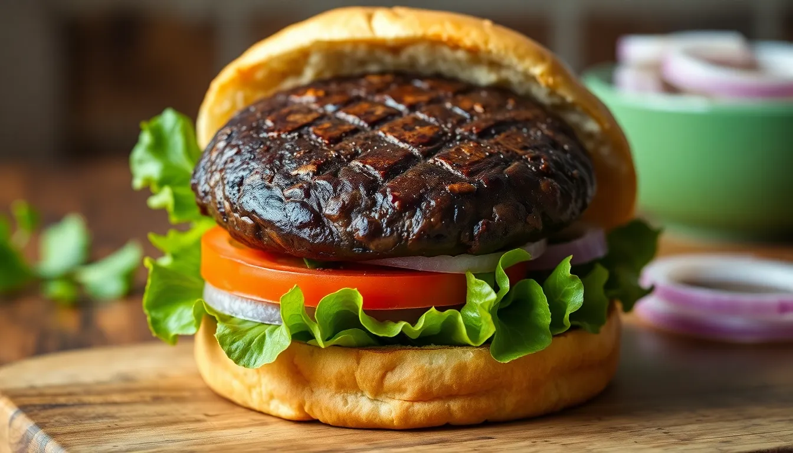

Portobello Mushroom Burgers
Prep time: 15 minutes - Cook time: 15 minutes - Total time: 30 minutes
Estimated total cost: $16.80 - Estimated cost per serving: $4.20 - Serves: 4

Ingredients
- 4 large portobello mushroom caps, stems removed — $6.00
- 4 burger buns — $2.50
- 1 tablespoon oil — $0.20
- 1 tablespoon soy sauce — $0.15
- 1 tablespoon balsamic vinegar — $0.30
- 1/2 teaspoon garlic powder — $0.05
- 1/2 teaspoon paprika — $0.05
- 1/4 teaspoon black pepper — $0.05
- 4 lettuce leaves — $0.80
- 1 tomato, sliced — $0.80
- 1/2 onion, sliced thin — $0.40
- Optional: mustard, vegan mayo, or pickles — $1.00
Estimated ingredient total: $12.30 to $13.30
Displayed planning estimate: $16.80
Detailed Instructions
- Wipe the portobello mushrooms clean with a damp paper towel and remove the stems.
- In a shallow bowl, whisk together the oil, soy sauce, balsamic vinegar, garlic powder, paprika, and black pepper.
- Place the mushroom caps in the marinade and turn them so both sides are coated.
- Let them sit for 10 minutes while you prep the toppings.
- Slice the tomato and onion, wash the lettuce, and set out any condiments.
- Heat a skillet or grill pan over medium heat.
- Cook the mushrooms for 5 to 6 minutes per side until tender and deeply browned.
- Toast the burger buns lightly if desired.
- Assemble the burgers with lettuce, tomato, onion, the cooked mushroom caps, and any optional condiments.
- Serve warm.
Helpful Notes
- Portobello caps shrink as they cook, so large mushrooms work best.
- These are also good with roasted potatoes on the side.
- A grill pan gives them a stronger burger-style feel.
Price Note
Ingredient prices can vary by store, brand, and region, so these are planning estimates rather than exact totals.